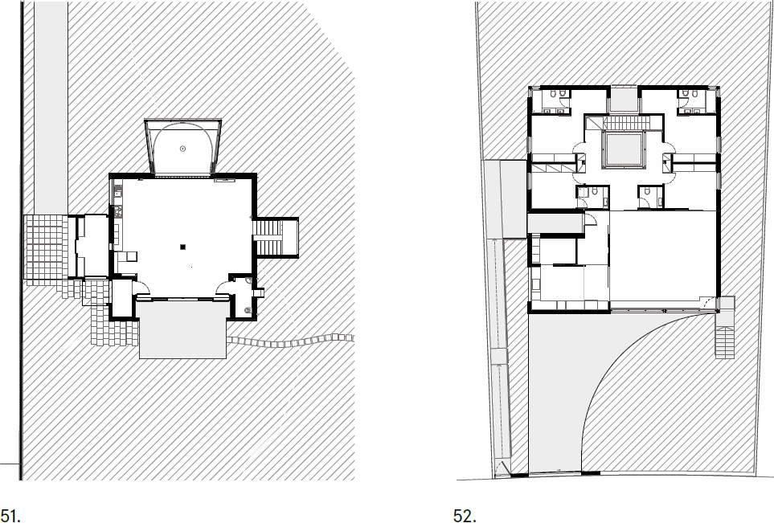
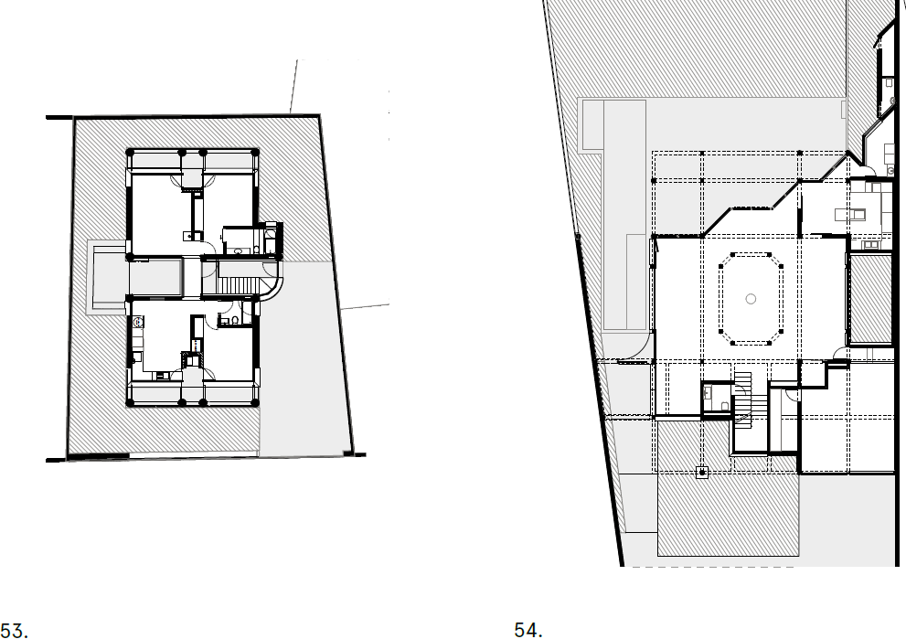
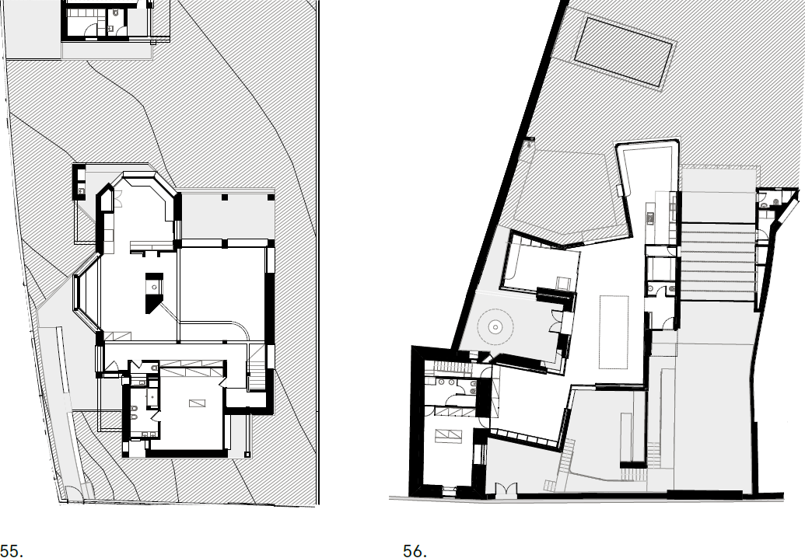

The language of a house1 - Doma magazine
Filipe Magalhães, Fala
Casa Crespo, model – view from the West
"Currently, architecture is always discussed
in terms of articles of faith about the way
the public and society in general should be.
Proposed systems always attempt to provide
a single plan for the whole of society, though
the proponents of such systems are doubtless
aware that no such thing is possible. Our generation,
on the other hand, cannot be content
with continuing to create one part of a vast
ring that cannot be completely closed. We reject
the idea of an image system that cannot
cover the entire picture. This is true because,
unable to close our eyes to the complexities
and contradictions of society, we feel stripped
and weak in the face of the necessity to gamble
everything on a single ideal. Finishing
materials, colour schemes, finish styles, and
patterns comply with the owners’ wishes,
no matter how vulgar. Once again, since
the building is theirs, we have no say on the
matter. We do not believe in the myth that
designing a house changes the personality of
its owners. The house is the battlefield where
the client and I encounter each other. It is not
a skillfully made parade of toy soldiers with a
flag and a band at their head."2
"Unlike the artists or other prominent cultural
figures who are the clients of architects whose
works are often seen in the architectural journals,
my clients are simply ordinary people.
When they asked me to design their homes,
it was apparent from the start that none of
them wanted me to design a dwelling that
would be a creative architectural “work”. So,
the questions that preoccupy an architect, such
as the form of the structure or the concept on
which it is to be designed, never entered into
our conversations. Since only the client’s concerns
are put up for discussion, the designer is
forced to proceed with the work, giving greater
priority to the concerns of living than to
abstract matters of artistic expression. These
were projects that made me think that there
was no room for introducing any such thing as
theories of architecture. When I met the first
client, he assumed an attitude of complete disinterest
in any “theme” that might be the concern
of the designer. I found myself wondering
about the viability of imposing artistic qualities
on an architectural work, and about the
very merits of buildings designed as “works of
art”. I found that there was no other way to
proceed than to put a priori themes aside and
to think in terms of the site where the design
would actually be built. To choose such an approach,
l realise, is to bring architecture down
from the lofty realms of theory to the level of
the act of designing. This is how I began to
pursue my work in design, attempting to rethink
the nature of architecture by viewing
it from the dimension of event and accidental
happening."3
"A design must not be based on arbitrary
conditions, such as whether or not the site is
beautiful, or whether it is broad or narrow. In
other words, I mean that the design of a house
should be based on an armature of ideas, independent
of the shape and environment of
the site. Also, a house must not be designed
for the client. The architect must be free from
the client. Whether or not the clients understand,
whether or not the carpenters are excellent,
all the good and bad aspects of house
design should reflect the good and bad aspects
of the architects themselves. And, from
the moment construction is complete and the
house is handed over, the architect has no
right to speak. The family is free to use their
house as it pleases, or even more beautifully
than the architect intended. This alternation
between disappointment and pleasure is only
proof that the autonomy of house design is not
owned by the architect but shifts to the client.
You are free to live in a house as chaotic
as you like, but if the scenes are unsatisfactory
for publication in a magazine, the architect
will rearrange things to suit his liking, choreographing
them such that the residents ‘may
not even toss in their sleep’. So, hypothetically,
if a house is always disorderly, the spaces
being choreographed may be described as
completely fictional. But such fictions must be
presented to society at large. Fictional spaces
have a magnificent power and, unlike public
buildings, it is especially necessary for houses
to achieve sufficient fictional meaning. We
should carry out our creative activities without
worrying about methods of comparison
with the real thing. The calibre of a work of
architecture corresponds to the calibre of the
fictional value structure from which it arises. I
have claimed that a house is a work of art. Art
lies in the ways that the design of a house may
bond with society and, if it does not become
a work of art, it has no reason to exist. Therefore,
strengthening the reciprocal connection
between house and society is not a secondary
task. It is an obvious aspect of house design,
and includes conveying it through mass media.
So, for me, a fictional space is never fictional."4



(51)- Casa de Férias, ground floor plan.
(52)- Lote 7, ground floor plan.
(53)- Casa Artur, ground floor plan.
(54)- Casa Crespo, ground floor plan.
(55)- Casa César, ground floor plan.
(56)- Casa de Rates, ground floor plan.
"The architect is perhaps concerned only with
the meaning-giving structure of architecture,
that is, its rhetoric. Robert Venturi writes,
“I try to talk about architecture rather than
around it”. When we say that the architect is
interested in “rhetoric”, we must recognise
that this rhetoric is functionally different
from the rhetoric of social meaning (ideology)
that I have called the first language of a lived
house. Through rhetoric, architecture creates
new registers to be read. If people find new
languages with many meanings in it, then
that is as it should be."5
A few weeks ago, over dinner, me and Hugo were
discussing how difficult it is to express our disciplinary
concerns to those who we work for.
Although our practices have different structures
– and perhaps different desires –, we operate in
the same circles, with overlapping anxieties. For
a few hours, in a cathartic exercise, we happily
criticised our context, cultural and economical,
shared stories of common places, and ended up
agreeing on the fact that, more often than not,
we find ourselves being the only ones “who care”.
Better still, we often find ourselves impersonating
the madman, shouting alone to an absent
audience. The conversation reminded me of the
context of a generation of Japanese fallen heroes,
that often recur within FALA, with reflective
texts written at times when such authors were
struggling with their careers and facing or theorising
about similar struggles. One could suppose
that, in a very different, but possibly not so different,
context, cycles come to repeat.
Writing a text is like doing a project: you need some
sort of an idea, or intellectual framework, to do it.
It can’t, or at least shouldn’t, be purely compositional.
A good text needs an angle, a direction, and
requires that its final form respects and potentiates
its intention. The structure doesn’t always work
and sometimes it ends up disguised as a motif. In
this case, to be clear, the hint was to appropriate
some of the generational texts that the conversation
reminded me of, and to manipulate them as
primary matter. To remove from the declarations
all references to their authors, time, and context
and, while reorganising the appropriated bits and
pieces, to claim them as mine, written today, as de
facto statements. To take the opportunity to project
my possible personal understanding of ATELIERDACOSTA
condition through someone else’s
gaze of a distant problem. To take a specific house
in Vila do Conde as a model of a generational disciplinary
enquiry. A collage, maybe; a fiction of our
reality and despair, certainly.
I had the chance to first get to know Casa Crespo
at a lecture ATELIERDACOSTA did in Lisbon a
couple years ago. Amongst other projects, it was
shown with scarce photographic materials, since
it was still under construction; most of the available
images were of a skeleton-like object, full of
light, still rendering. Amongst the drawings, the
Baroque plans fascinated me as they referred to an
active and assumed use of history for contemporary
production of architecture, something I believe
the discipline should stand for. Between other
hints and references, Borromini’s San Carlo alle
Quattro Fontane’s plan was theirs, for a few minutes
of conversation, and until life do us part, in
the soon-to-be-built house. On another level, the
house that was presented didn’t try to solve anything,
to address any social concerns, to be political,
to inflict anything, but to be a thing per se.
That house approached architecture as I foolishly
hope all houses could do. Regardless of its final
form, it was a disciplinary exercise before being
anything else. The outside shell, proto-modern
and suburban – relatable –, defined a buffer to
the world. Someone walking by would probably
not notice it, reading it as another amongst many,
camouflaged; yet, in such a threshold, the evident
quality of its design was there, for the few who
would be able to notice it. Inside, with no ornament,
but through an ornamental understanding,
it felt complex and neoclassical, even with all the
walls plastered in white, flat, incomplete. A fortunate
contradictory object, a la Venturi.
Recently, I had the opportunity to visit the house,
to add the physical in situ experience to the fictional
one I had assembled from its authors’ images and
words. With the owners away, but the Koolhaasian
maid doing her chores, we had about one hour to
study the battlefield where Hugo and Diogo admitted
defeat while talking about how they had
to abandon the project close to the end, after “the
architect was not necessary anymore”. The scars of
the lost battle were all over the place, evident: Life
with Objects, cliché nouveau riche, interior decorator
bullshit propaganda at its prime. An absolute
incapacity to read the spatial qualities by those who
solicited them. Beyond the visual clutter, chirurgical
changes that attacked the project’s intentions at
their core revealed the stricken misunderstanding
that the house represented.
 (57)- Casa Artur, view from the street.
(57)- Casa Artur, view from the street.
(58)- Casa Crespo, central space.
(59)- Casa Crespo, view from south.
Needless to say, when asked to write a text about
a house, one could, and probably should, describe
said house. Claim its merits. Have the courage to
criticise it, negatively if necessary, with wit and intelligence.
Put it in a certain context, be it political,
social or economic, and make sense of it. To propose
a theoretical understanding of it, even. However,
this text doesn’t do any of that. And if anyone tries
to read it from such a perspective, it will succumb.
It is, quite literally, a collage of two antagonistic
blocks: the first stolen and manipulated from fallen
heroes, the second without structure or obvious
goal. This text, like the house it supposedly reflects
upon, is a composition, a difficult double, hiding its
intentions in plain sight.
Within FALA, I like to discuss with Ahmed the fact
that he still naively believes it is possible to always
have one foot in both worlds (ours and the client’s)
and achieve a satisfactory project for both. After so
many downfalls in the battlefield, I cynically don’t
believe it anymore, because to a certain degree I
never did. The Venn diagram doesn’t overlap and
very few exceptions, usually due indifference and /
or circumstance, help to prove a rule, nothing more.
Nevertheless, and despite the long distance between
the words of the designers and interpretations of
the inhabitants, Casa Crespo’s intellectual charm
was there, untouched, unattackable: an exterior
deconstructed shell protecting the gorgeous double-
height octagonal space from the world. Not in a
purely rhetorical manner, nor in a phenomenological
sense, the house was a house. Full of trash, but
frank. Maybe, as it was always meant to be.
(1)- Original title appropriated from: “the language of the house”
Koji Taki, 1971.aken from: Tamami Iinuma, ‘Searching for the
language of a house. Architectural photography of Koji Taki’s
tokyo: house of architecture, 2020.
(2)- Original text appropriated from: “Primary house project”
Mayumi Miyawaki, 1971. Taken from ‘The Japan architect, July
1971’ (edited, rearranged and manipulated by the author).
(3)- Original text appropriated from: “My work of the seventies”
Itsuko Hasegawa, 1985. Taken from ‘Space design 04.1985’
(edited, rearranged and manipulated by the author).
(4)- Original text appropriated from: “The autonomy of house
design”, Kazuo Shinohara, 1964. First published in ‘Kenchiku
April 1964’. Taken from: Thomas Daniell, ‘An anatomy of
influence’, Architectural Association, 2018 (edited, rearranged
and manipulated by the author).
(5)- Original text appropriated from: “the language of the house”
Koji Taki, 1971. Taken from: Tamami Iinuma, ‘Searching for the
language of a house. Architectural photography of Koji Taki’,
Tokyo: House of architecture, 2020 (edited, rearranged and
manipulated by the author).
PREVIOUS
|
NEXT
↑